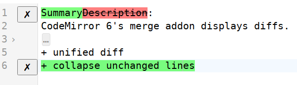

codemirror-next-merge
Unified diff view for CodeMirror 6.

Features
- unified diff view
- diff against a string or another editor
- button to accept chunks
- fold gaps of unchanged text
Usage
npm install --save yingted/codemirror-next-merge
import {EditorView, EditorState, basicSetup} from '@codemirror/next/basic-setup';
import {acceptString} from 'codemirror-next-merge';
import {foldAll} from '@codemirror/next/fold'; // optional
let view = new EditorView({
state: EditorState.create({
doc: 'old doc',
extensions: [
basicSetup,
acceptString('new doc'),
],
}),
parent: document.querySelector('#editor'),
});
foldAll(view); // optional
Advanced
Copy the code of acceptString into your project to customize:
- decorations and gutter buttons
- shortcut to accept all changes
- diff algorithm
Build
npm install
npm run build-demo
npm run serve-demo
Then, open: http://127.0.0.1:8081/demo.html